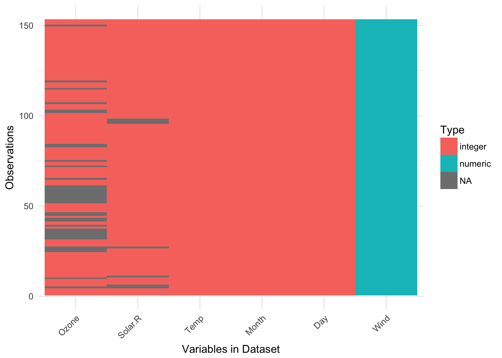
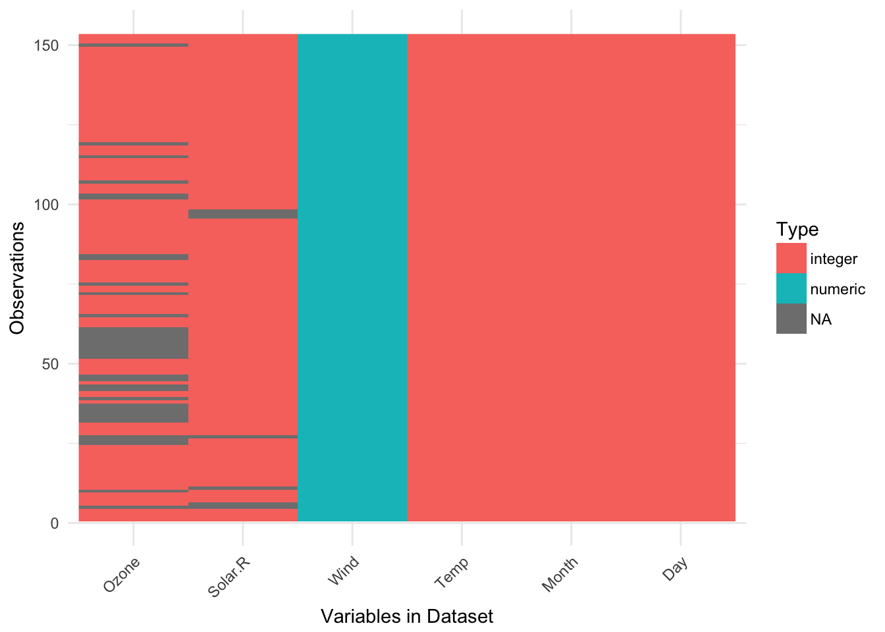
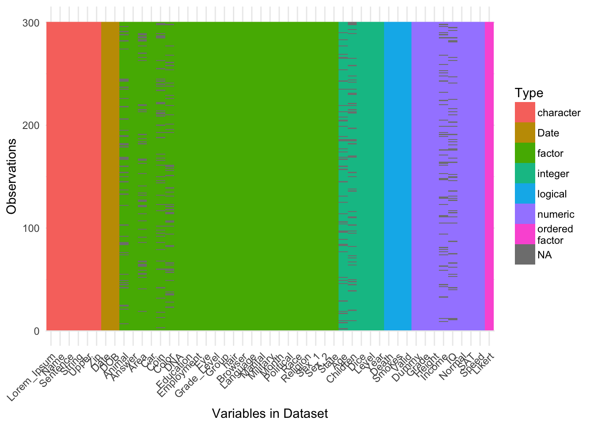

What does visdat do?
Initially inspired by csv-fingerprint, vis_dat helps you visualise a dataframe and “get a look at the data” by displaying the variable classes in a dataframe as a plot with vis_dat, and getting a brief look into missing data patterns vis_miss.
The name visdat was chosen as I think in the future it could be integrated with testdat. The idea being that first you visualise your data (visdat), then you run tests from testdat to fix them.
There are two main commands in the visdat package:
vis_dat()visualises a dataframe showing you what the classes of the columns are, and also displaying the missing data.vis_miss()visualises just the missing data, and allows for missingness to be clustered and columns rearranged.vis_miss()is similar tomissing.pattern.plotfrom themipackage. Unfortunatelymissing.pattern.plotis no longer in themipackage (well, as of 14/02/2016).
There are two experimental functions:
vis_guess()has a guess at what the value of each cell, usingreadr::parse_guess. This means that “10.1” will return “double”, and10.1will return “double”, and01/01/01will return “date”. Keep in mind that it is a guess at what each cell is, so you can’t trust this fully.vis_compare()compares two dataframes, displaying the differences.
Examples
Using vis_dat()
Let’s see what’s inside the dataset airquality
library(visdat)
vis_dat(airquality)
The classes are represented on the legend, and missing data represented by grey.
by default, vis_dat sorts the columns according to the type of the data in the vectors. You can turn this off by setting sort_type = FALSE. This feature is better illustrated using the airquality dataset from base R.
vis_dat(airquality,
sort_type = FALSE)
The plot above tells us that R reads this dataset as having characters and integer values, along with some missing data in Ozone and Solar.R.
With many kinds of data
To demonstrate what visdat looks like when you have different kinds of data, we can look at the dataset typical_data, provided within visdat, and created with the excellent wakefield package.
vis_dat(typical_data)
#> Warning: attributes are not identical across measure variables; they will
#> be dropped
We can also look into using even wider data, looking at typical_larger_data
vis_dat(typical_larger_data)
#> Warning: attributes are not identical across measure variables; they will
#> be dropped
Using vis_miss()
We can explore the missing data further using vis_miss()
vis_miss(airquality)
The percentages of missing/complete in vis_miss are accurate to 1 decimal place.
You can cluster the missingness by setting cluster = TRUE
vis_miss(airquality,
cluster = TRUE)
The columns can also just be arranged by columns with most missingness, by setting sort_miss = TRUE.
vis_miss(airquality,
sort_miss = TRUE)
When there is <0.1% of missingness, vis_miss indicates that there is >1% missingness.
test_miss_df <- data.frame(x1 = 1:10000,
x2 = rep("A", 10000),
x3 = c(rep(1L, 9999), NA))
vis_miss(test_miss_df)
#> Warning: attributes are not identical across measure variables; they will
#> be dropped
vis_miss will also indicate when there is no missing data at all
vis_miss(mtcars)
Experimental features
Using vis_compare()
Sometimes you want to see what has changed in your data. vis_compare() helps with that. It is currently only just barely working, so keep in mind that this is very much in its beta stages.
For the sake of simplicity, lets make some changes to iris, and compare this new dataset
iris_diff <- iris
iris_diff[sample(1:150, 30),sample(1:4, 2)] <- NA
vis_compare(iris_diff, iris)
#> vis_compare is still in BETA! If you have suggestions or errors,
#> post an issue at https://github.com/njtierney/visdat/issues
#> Warning in if (dim(df1) != dim(df2)) {: the condition has length > 1 and
#> only the first element will be used
#> Warning: attributes are not identical across measure variables; they will
#> be dropped
#> Warning: attributes are not identical across measure variables; they will
#> be dropped
Here the differences are marked in blue.
If you try and compare differences when the dimensions are different, you get an ugly error.
iris_diff_2 <- iris
iris_diff_2$new_col <- iris$Sepal.Length + iris$Sepal.Width
vis_compare(iris, iris_diff_2)
#> vis_compare is still in BETA! If you have suggestions or errors, post an issue at https://github.com/njtierney/visdat/issuesthe condition has length > 1 and only the first element will be usedError: `.x` (5) and `.y` (6) are different lengths
Using vis_guess()
vis_guess() takes a guess at what each cell is. It’s best illustrated using some messy data, which we’ll make here.
messy_vector <- c(TRUE,
T,
"TRUE",
"T",
"01/01/01",
"01/01/2001",
NA,
NaN,
"NA",
"Na",
"na",
"10",
10,
"10.1",
10.1,
"abc",
"$%TG")
set.seed(1114)
messy_df <- data.frame(var1 = messy_vector,
var2 = sample(messy_vector),
var3 = sample(messy_vector))
vis_guess(messy_df)
#> vis_guess is still in BETA! If you have suggestions or errors,
#> post an issue at https://github.com/njtierney/visdat/issues
So here we see that there are many different kinds of data in your dataframe. As an analyst this might be a depressing finding. Compare this to vis_dat.
vis_dat(messy_df)
Where you’d just assume your data is weird because it’s all factors - or worse, not notice that this is a problem.
At the moment vis_guess is very slow. Please take this into consideration when you are using it on data with more than 1000 rows. We’re looking into ways of making it faster, potentially using methods from the parallel package, or extending the c++ code from readr:::collectorGuess.
Interactivity
Thanks to Carson Sievert, you can now add some really nifty interactivity into visdat by using plotly::ggplotly, allowing for information to be revealed upon mouseover of a cell. The code to do this can be seen below, but is not shown as the github README doesn’t support HTML interactive graphics…yet.
library(plotly)
vis_dat(airquality) %>% ggplotly()vis_dat_ly
This is still under development, but it is basically a faster version of doing a ggplot and then calling ggplotly.
vis_miss_ly
This is also under development, and still needs some more work on the legend, etc.
vis_miss_ly(airquality)Road Map
Visualising expectations
The idea here is to pass expectations into vis_dat or vis_miss, along the lines of the expectation command in assertr. For example, you could ask vis_dat to identify those cells with values of -1 with something like this:
data %>%
expect(value == -1) %>%
vis_datThank yous
Thank you to Ivan Hanigan who first commented this suggestion after I made a blog post about an initial prototype ggplot_missing, and Jenny Bryan, whose tweet got me thinking about vis_dat, and for her code contributions that removed a lot of errors.
Thank you to Hadley Wickham for suggesting the use of the internals of readr to make vis_guess work.
Thank you to Miles McBain for his suggestions on how to improve vis_guess. This resulted in making it at least 2-3 times faster.
Thanks also to Carson Sievert for writing the code that combined plotly with visdat, and for Noam Ross for suggesting this in the first place.